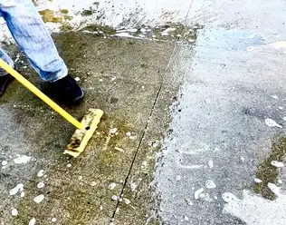

When someone responds to us without hurt-filled hate on the sidewalk of our state’s only abortion facility, it is usually a surprise, and it always feels like a gift from God.
It’s the reason we show up—to find God somehow in the rubble of brokenness that piles up there each week, as those who approach lose hope; hope that diminishes to almost nothing the length of half a city block—the approximate distance it takes to get from a parked vehicle on the curb to the front entrance of the Red River Women’s Clinic.
Even as we’re trying to offer hope and expand the choices available to the women who show up on the day marked in advance for the death of their living child, we too pray for hope to appear.
The day the girl with the dark brown eyes and the college sweatshirt walked out was one of those afternoons I wasn’t expecting much in the way of hope. I hadn’t been there that long when I saw her, her head hung low, leaving the facility with a brown sack and a purple, plastic bag.
The plastic sack indicates the presence of pills, and because we know chemical abortions are becoming more and more prevalent, there’s a high probability women clutching this purple bag have been given medication to expel their child from their womb.
Since we never know for sure, we are sometimes direct, wanting to offer the right resources. So, I asked her pointedly, “Did you have an abortion?” “Not yet,” she responded quietly. This either meant she was still thinking about it, or she’d begun the process, but it wasn’t complete. Hopeful it was the former, I began offering literature to help her in her predicament. I expected resistance, but instead, felt her vulnerability as she looked at me squarely and said, “Could I have a hug?”
Though I try to talk tenderly to the women I confront there, if given a chance, and have reached out my hand before, I’ve never received a request for a hug. I could tell from the way she asked that it was sincere; that she was desperate to be held.
I can only imagine how broken a person must feel to ask for a hug from a complete stranger, and one you’ve been set up to feel is judging you. Somehow though, she knew that wasn’t the case, and as I spoke encouragingly, pointing the way to help and hope as well as I could, we embraced a second time. Though holding a weary stranger, I felt as if I were hugging my own daughter, and that my heart might break.
She briefly explained a bit of her situation. Things weren’t good with the dad and, well, it was complicated.
It always is. Life is complicated. Unplanned pregnancy is complicated. How have we gotten to this point though, of convincing people that this kind of complication must result in erasing a human life? We have failed at the most important message of all: that life bursts from nothingness to something: something real, something beautiful, something of inestimable value.
Eventually, we exchanged numbers and she promised to follow up, but when I tried to check in by text later, only silence followed. I am haunted by this, concerned she later took the rest of the pills and participated in killing her child. If so, I know she is haunted too, and likely alone in her misery. She has been on my mind and in my prayers ever since.
Only a week or so later, at the same corner of our city, I saw a worker from the burger joint next door rubbing off a chalk message written by a prayer advocate earlier to offer hope. As I raised my phone camera to snap a picture, his broom brushed away the last sign of hope; the very word “hope” itself.

I thought again of that young lady with the deep brown eyes who’d asked me for a hug, and of the hope that’s washed away every time someone slips through the cracks. I want to believe that maybe I’m wrong, that this sweet soul changed her mind. If so, I can think of no better name for her child, if she is a girl, than Hope.
Mary, Undoer of Knots, mother of all, please pray for her, and for us in all our mangled messes.
[Note: I write about my experiences on the sidewalk Downtown Fargo on Wednesday, the day abortions happen at our state’s only abortion facility, for New Earth magazine — the official news publication of the Fargo Diocese. I hope you find “Sidewalk Stories” helpful in understanding the truth about abortion and how it plays out tragically each week here in Fargo, N.D. The preceding ran in New Earth’s December 2020 issue.]